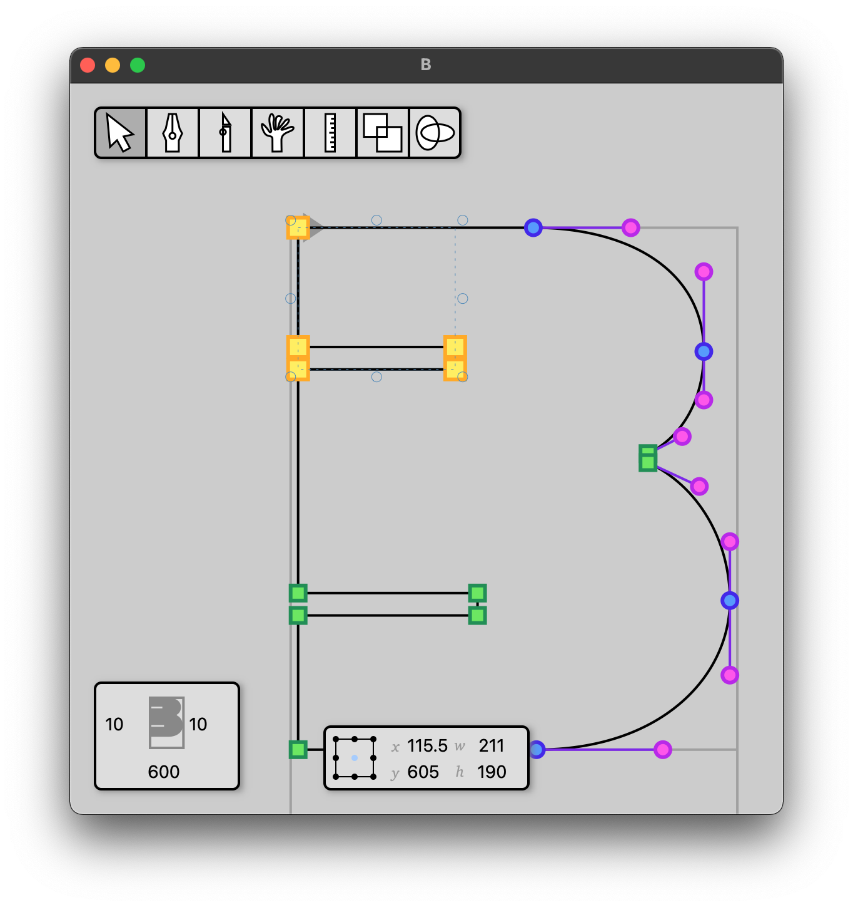

My Runebender Light Theme
December 6, 2020
I have my own personal light theme for Runebender in a Git branch here. This theme is based on a UI mockup I made in Figma. It was designed for Twitch streaming and making video content, so everything is a bit bigger than it would normally be in most other desktop font editing applications. See the theme in use and build instructions below.
To use Runebender with this theme, open a UN*X shell (Mac, Linux, Windows(WSL)), and clone my fork:
git clone https://github.com/eliheuer/runebender.gitMove into the root Runebender directory.
cd runebenderUse Git to checkout the branch containing my theme.
git checkout elihs-themeRun the program.
cargo runYou can also load a UFO (Unified Font Object) from the command line if you need something to look at.
cargo run -- ~/Fonts/repos/baby-shark/sources/baby-shark.ufoIf you have any issues, technical questions, or thoughts on this post, please make an issue on this blogs GitHub issue tracker.